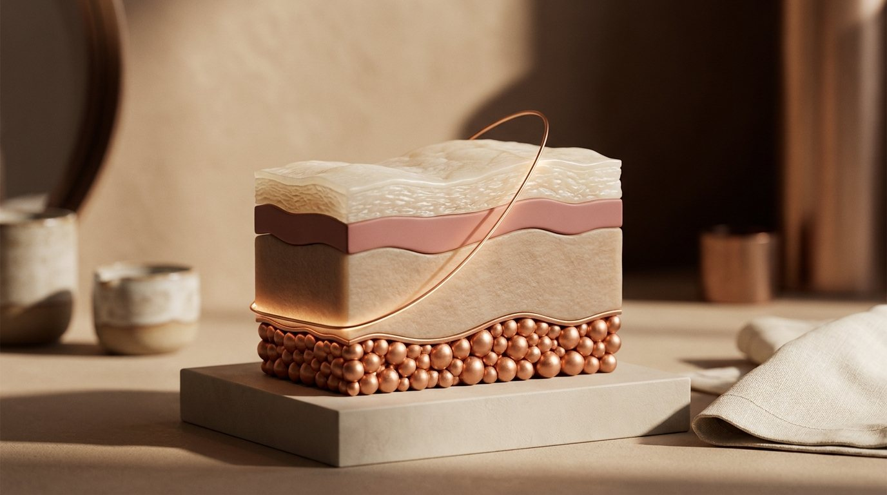
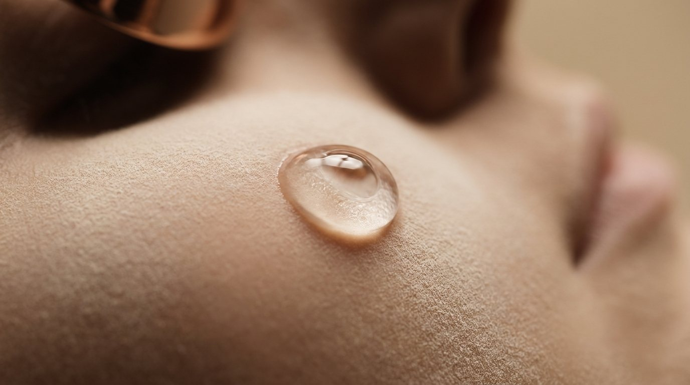
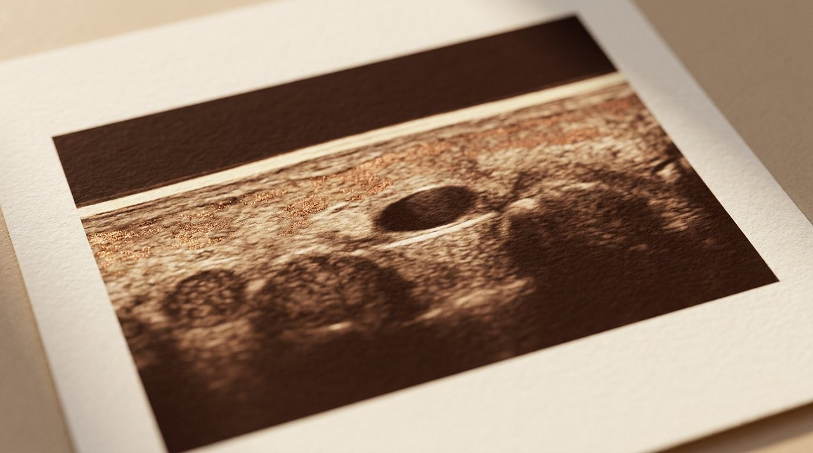
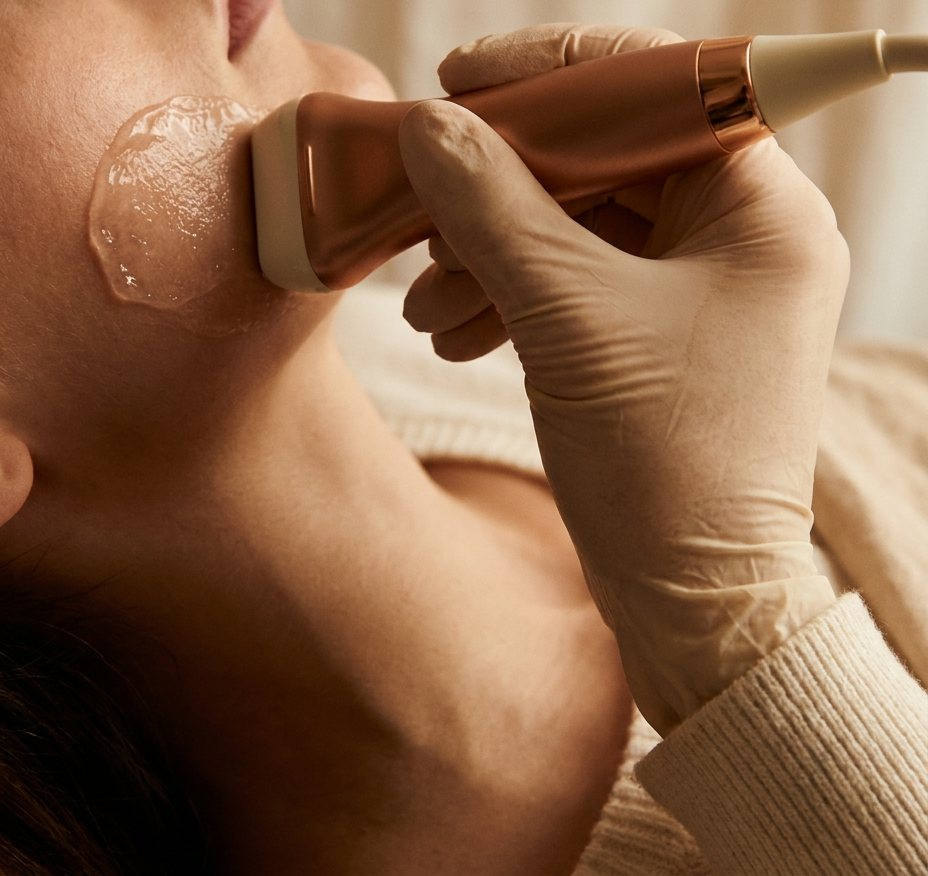
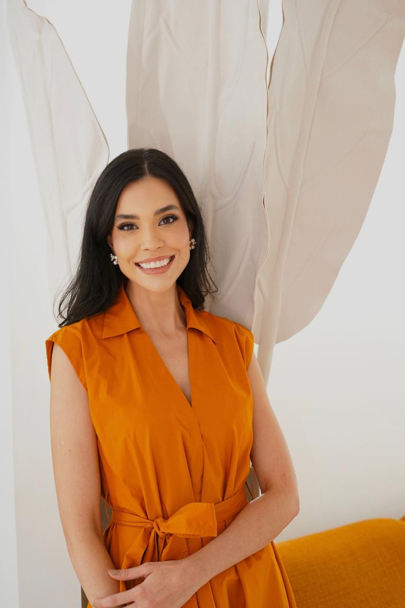
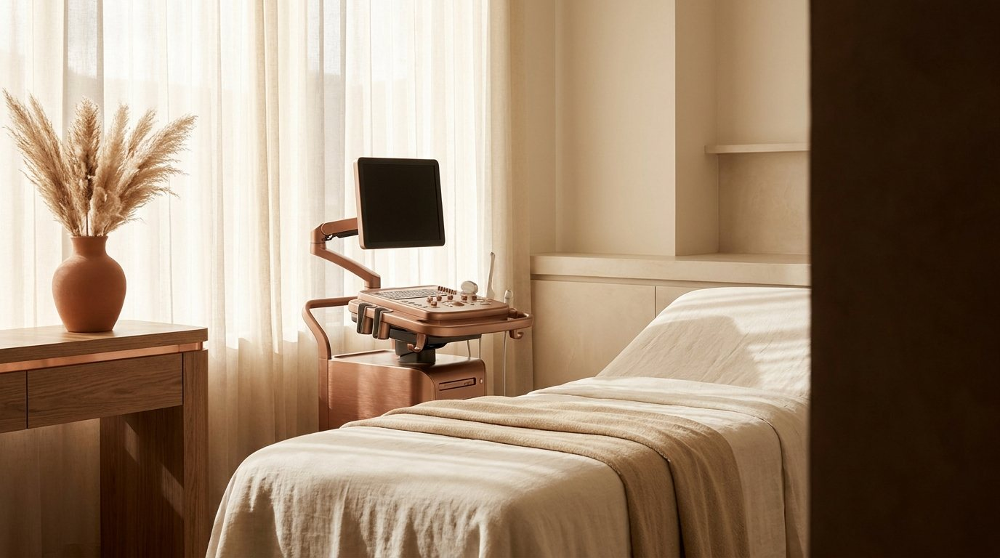

Ver além do que os olhos enxergam.
A pele tem camadas. O ultrassom de alta frequência mostra o que existe em cada uma delas — produtos, vasos, nódulos — antes de qualquer decisão sobre o seu rosto.
Médica · Radiologia e Diagnóstico por Imagem
O olho vê a superfície. O ultrassom vê o resto.
Role para acompanhar o que o exame enxerga, camada por camada, no próprio rosto.

A pele tem camadas. O olho vê uma.
Nem todo ultrassom enxerga a pele. O exame convencional usa sondas de 4 a 12 MHz e olha fundo: tireoide, mama, músculos. O ultrassom dermatológico usa sondas de alta frequência, de 18 a 22 MHz, e enxerga a epiderme, a derme e a gordura logo abaixo — com detalhe de décimos de milímetro, sem radiação e com Doppler colorido para ver a circulação.
O que existe no seu rosto?
Ácido hialurônico, bioestimulador, PMMA, silicone, fios: cada material aparece de um jeito no ultrassom. O mapeamento mostra o que há, onde está e em que profundidade — inclusive o que você não lembra ou nunca soube.
O que você não lembra, ou nunca soube, o exame mostra — e isso muda o plano.
Antes de injetar, mapear.
Cada rosto tem um mapa diferente. Em cerca de um terço das pessoas, a artéria do sulco nasolabial não está onde os livros dizem. O Doppler mostra por onde passam as suas artérias e o que já foi colocado ali. Com o mapa na mão, a sua dermatologista decide onde, quanto e em que plano — com previsibilidade e segurança, sem atuar “às cegas”.
Fonte: Lee, Aesthet Surg J 2021.
- iVasos e variações anatômicasO trajeto real, no seu rosto, não o do atlas.
- iiProdutos prévios e profundidadeO que há, de que tipo e em que plano.
- iiiPlano de aplicaçãoUm mapa para a sua médica decidir com segurança.

O exame soma informação ao planejamento; não substitui a técnica nem a avaliação da sua médica.
Nódulo, inchaço tardio, dor, endurecimento.
Nem toda nodulação é igual. O ultrassom diferencia produto acumulado, inflamação, coleção, produto deslocado e reação a fio — e, quando indicado, guia o tratamento em tempo real: hialuronidase no ponto exato, drenagem, punção.

Tratamento sem necessidade de atuação às cegas.Dra. Martina Salmen Fraga
A pele inteira, não só o rosto.
- aHidradenite supurativaA doença costuma ser mais extensa do que aparenta; o ultrassom encontra fístulas e coleções que o exame clínico não vê. Em 143 pacientes, 45% dos casos classificados como leves foram reestadiados como mais graves (Martorell, JEADV 2019).
- bLesões de peleCistos, lipomas e lesões que precisam de medida e profundidade antes de uma cirurgia; em 4.338 exames, o acerto diagnóstico subiu de 73% para 97% com o ultrassom (Wortsman, JAAD 2010).
- cUnhaTumor glômico, onicopapiloma e outras lesões sob a unha.
Como é.
Sem dor, sem agulha, sem radiação, sem preparo: venha sem maquiagem e sem protetor solar. Um gel e um transdutor pequeno sobre a pele, por cerca de 20 a 40 minutos. O laudo sai no mesmo dia, com imagens e mapa, para você e para a sua médica.

- iO que levarO que já aplicou (produto, área, data), exames anteriores e a sua queixa.
- iiComo virSem maquiagem e sem protetor solar na área a examinar. Sem jejum, sem suspender nada.

O ultrassom dermatológico não é luxo, é responsabilidade.
Dra. Martina Salmen Fraga
Radiologista que escolheu olhar de perto: a pele, os materiais que colocam nela e tudo o que o exame clínico não alcança. Atende pacientes e trabalha junto com dermatologistas, antes e depois dos procedimentos.
- RegistroCRM-MG 70647 · RQE 56349
- FormaçãoFellow em ressonância magnética — Hospital Mater Dei
- Ultrassonografia dermatológicaFormação no Instituto Azulay
- EquipeRêve Medicina, Belo Horizonte
- EnsinoProfessora de cursos de ultrassom dermatológico nos procedimentos injetáveis, para dermatologistas
“Quando você tem a chance de ver além do que os olhos enxergam, você toma decisões mais seguras. O ultrassom dermatológico não é luxo, é responsabilidade.”Dra. Martina Salmen FragaAgendar avaliação
Sua paciente, com o mapa na mão.
Mapeamento antes do procedimento (vasos + produtos prévios, com marcação por posição-padrão), avaliação de complicações com Doppler e procedimento guiado na sua clínica (hialuronidase direcionada, punção, drenagem). Aula para a sua equipe.
- iMapeamento antes do procedimentoVasos, variações anatômicas e produtos prévios, com profundidade e marcação por posição-padrão. Laudo com imagens e mapa para o seu planejamento.
- iiComplicações e procedimento guiadoAvaliação com Doppler e, na sua clínica, hialuronidase direcionada, punção e drenagem com o transdutor na mão, em tempo real.
- iiiAula para a sua equipeO que o ultrassom muda na conduta dos injetáveis, com casos e critérios de solicitação.
“E se, em vez de ácido hialurônico, fosse PMMA? Isso muda completamente a conduta.”Dra. Martina Salmen Fraga, em aula
Justificativa, conforme o caso: mapeamento facial para avaliação de preenchedores prévios · nódulo pós-procedimento · suspeita de hidradenite · lesão de pele · lesão ungueal.
O laudo é seu instrumento; a decisão clínica é sua. A parceria soma, não substitui.
Vamos olhar com calma.
Conte em uma frase o que você precisa. A resposta vem pelo WhatsApp, com as próximas datas.

Pelo WhatsApp
Mensagem já pronta. É só enviar; a resposta vem com os horários disponíveis.
Abrir WhatsApp Belo Horizonte, MG · Rêve Medicina